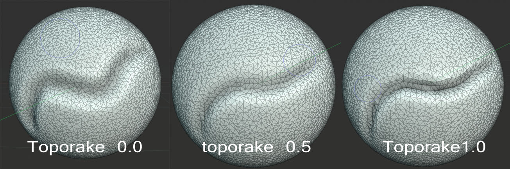

Brush Settings¶
Mỗi chế độ và brush có các cài đặt brush riêng biệt. Tuy nhiên cũng có nhiều cài đặt trùng lặp hoặc tương tự nhau. Trang này giải thích chi tiết hơn về các cài đặt chung và cài đặt riêng theo chế độ được dùng trong nhiều brush khác nhau.
Các thay đổi đối với cài đặt của một brush asset là tạm thời và sẽ bị loại bỏ khi Blender được đóng. Để giữ lại cài đặt, hãy lưu chúng vào brush asset đang hoạt động bằng Save Changes to Asset, hoặc tạo một brush asset mới bằng Duplicate Asset, xem Asset Operators. Việc tải một file khác trong khi Blender vẫn đang mở sẽ không loại bỏ các cài đặt này.
Cài đặt thống nhất¶
Một số cài đặt (ví dụ: size, strength, color), được đánh dấu bằng , cho phép dùng cài đặt theo từng chế độ thay cho cài đặt riêng của từng brush. Các cài đặt này được dùng chung cho mọi brush của một chế độ nhất định (ví dụ: Sculpt Mode) nhưng không ghi đè giá trị riêng của từng brush. Việc một brush dùng giá trị chung hay giá trị riêng của nó được kiểm soát theo từng brush.
General¶
- Size
Tùy chọn này điều khiển kích thước của brush, đo bằng pixel. F cho phép bạn thay đổi kích thước brush một cách tương tác bằng cách kéo chuột từ trái sang phải rồi nhấn LMB để chấp nhận. Trong lúc đó, texture của brush sẽ hiển thị bên trong vòng tròn. Bạn cũng có thể nhập kích thước bằng số với các phím số.
Kích thước có thể được giảm/tăng lần lượt bằng [ và ].
- (Size Pressure)
Điều chỉnh kích thước dựa trên lực ấn của bút khi dùng Graphics Tablet.
- (Use Unified Size)
Dùng giá trị Size dùng chung của brush cho brush này.
- / (Expand/Collapse)
Hiện hoặc ẩn đường cong áp lực tùy biến.
- Custom Curve
Theo mặc định, đây là một đường thẳng có độ dốc dương sao cho lực ấn càng lớn thì kích thước brush càng lớn.
Về các điều khiển curve, xem: Curve widget.
- Size Unit Sculpt Mode
Kiểm soát cách đo Size của brush.
- View:
Size được đo dựa trên cách con trỏ hiển thị trên màn hình, tức là theo "screen space" (không gian màn hình).
- Scene:
Size được đo dựa trên đơn vị thực. Điều này có nghĩa là kích thước brush giữ nguyên, không phụ thuộc vào việc phóng to hay thu nhỏ trong viewport. Loại đơn vị và hệ số tỷ lệ có thể được cấu hình trong Scene Units.
- Strength
Đối với brush vẽ, Strength xác định hiệu ứng tối đa của mỗi nét brush. Ví dụ, giá trị cao hơn khiến brush Paint tạo cho mỗi nét một độ đục cao hơn. Độ đục không bao giờ mạnh hơn Strength đã đặt, dù cùng một bề mặt được vẽ bao nhiêu lần trong cùng một nét.
Ngược lại, đối với brush sculpt, Strength liên quan đến độ mạnh của từng bước trong mỗi nét, khiến hiệu ứng đầy đủ của brush được tích lũy chậm hay nhanh trong suốt nét vẽ.
Bạn có thể thay đổi độ mạnh của brush một cách tương tác bằng cách nhấn Shift-F, di chuyển brush rồi nhấn LMB. Bạn cũng có thể nhập giá trị strength bằng số với các phím số.
- (Strength Pressure)
Điều chỉnh strength dựa trên lực bút khi dùng Graphics Tablet.
- (Use Unified Strength)
Dùng giá trị Strength dùng chung của brush cho brush này.
- / (Expand/Collapse)
Hiện hoặc ẩn đường cong áp lực tùy biến.
- Custom Curve
Theo mặc định, đây là một đường thẳng có độ dốc dương sao cho lực ấn càng lớn thì mức biến dạng của brush càng mạnh.
Về các điều khiển curve, xem: Curve widget.
- Blend
Xác định cách giá trị hoặc màu của brush được kết hợp với dữ liệu hiện có.
Tùy thuộc vào chế độ vẽ, điều này có thể ảnh hưởng đến Image Texture, Color Attribute, trọng số Vertex Group, hoặc dữ liệu có thể vẽ khác.
Xem Color Blend Modes.
- Mix:
Pha trộn giá trị hoặc màu của brush với giá trị hiện có. Strength điều khiển tốc độ các nét lặp lại tiến gần đến giá trị của brush.
- Add:
Cộng giá trị hoặc màu của brush vào giá trị hiện có. Strength điều khiển lượng được cộng thêm bởi mỗi nét.
- Subtract:
Trừ giá trị hoặc màu của brush khỏi giá trị hiện có. Strength điều khiển lượng được bớt đi bởi mỗi nét.
- Lighten:
Chỉ áp dụng brush ở những nơi nó tạo ra giá trị sáng hơn hoặc lớn hơn giá trị hiện có.
- Darken:
Chỉ áp dụng brush ở những nơi nó tạo ra giá trị tối hơn hoặc nhỏ hơn giá trị hiện có.
- Multiply:
Nhân giá trị hoặc màu hiện có với giá trị hoặc màu của brush.
- Blur:
Làm mượt các giá trị hoặc màu lân cận để giảm biến đổi cục bộ. Giá trị hoặc màu của brush bị bỏ qua, trong khi Strength điều khiển mức độ làm mượt.
- Add Alpha:
Tăng alpha của hình ảnh được vẽ, làm cho các vùng đã vẽ đục hơn.
- Erase Alpha:
Giảm alpha của hình ảnh được vẽ, làm cho các vùng đã vẽ trong suốt hơn và lộ nội dung bên dưới.
Sử dụng đầu tẩy của bút bảng vẽ có thể kích hoạt chế độ pha trộn này.
Mẹo
Để thấy hiệu quả của các chế độ pha trộn Add Alpha và Erase Alpha trong Image Editor, Display Channels phải được đặt thành Color & Alpha hoặc Alpha. Các vùng trong suốt được hiển thị với nền ca-rô.
- Weight Weight Paint
Giá trị trọng số được áp dụng vào vertex group.
Dùng Shift-X để lấy mẫu giá trị trọng số của vertex được nhấp. Shift-Ctrl-X cho phép bạn chọn nhóm để lấy mẫu từ đó.
- Direction Ctrl Sculpt Mode
Công tắc chuyển hướng brush: Add nâng hình học về phía brush, Subtract hạ hình học ra xa brush. Cài đặt này có thể được chuyển đổi bằng Ctrl trong khi sculpt.
- Normal Radius Sculpt Mode
Xác định tỷ lệ phần bán kính brush được dùng để lấy mẫu hướng pháp tuyến của sculpt plane của brush. Ví dụ, Normal Radius nhỏ hơn sẽ dẫn đến những thay đổi mạnh về hướng của brush, chẳng hạn như bám sát hơn các đường nét của hard surface mesh. Normal Radius lớn sẽ dẫn đến những thay đổi hướng mượt mà hơn, chẳng hạn như dựng hình khối tổng thể trên các tác phẩm điêu khắc hữu cơ.
- Area Radius
Tỷ lệ giữa bán kính brush và bán kính sẽ được dùng để lấy mẫu độ sâu của area plane.
- Tilt Strength Sculpt Mode
Xác định mức độ nghiêng của bút bảng vẽ ảnh hưởng đến pháp tuyến của brush. Giá trị âm tương ứng với việc đảo chiều hướng nghiêng.
- Auto-smooth Sculpt Mode
Đặt lượng làm mượt được áp dụng cho mỗi nét.
- (Smooth Pressure)
Điều chỉnh hệ số tự làm mượt dựa trên lực ấn của bút khi dùng Graphics Tablet.
- / (Expand/Collapse)
Hiện hoặc ẩn đường cong áp lực tùy biến.
- Custom Curve
Theo mặc định, đây là một đường thẳng có độ dốc âm sao cho lực ấn càng nhẹ thì mức làm mượt được áp dụng càng nhiều.
Về các điều khiển curve, xem: Curve widget.
- Topology Rake Sculpt Mode
Cài đặt này càng cao thì Dyntopo càng căn chỉnh các cạnh của mesh theo hướng brush trong khi chia nhỏ bề mặt thành tam giác. Điều này tạo ra dòng cạnh sạch hơn giúp định hình các chi tiết sắc nét. Topology Rake có thể ảnh hưởng nghiêm trọng đến hiệu năng nên hoạt động tốt nhất trên mesh low-poly.

- Normal Weight Ctrl Sculpt Mode
Ràng buộc chuyển động của brush theo pháp tuyến bề mặt. Đặc biệt hữu ích với brush Grab, có thể được bật tạm thời bằng cách giữ Ctrl. Ví dụ, brush Grab có thể được dùng để đẩy một vùng lõm (lỗ) vào mesh khi Normal Weight được đặt.
Áp dụng cho các brush Grab và Snake Hook.
- Plane Offset Sculpt Mode
Độ lệch cho các brush phẳng (Clay, Fill, Flatten, Scrape), dịch chuyển mặt phẳng được tìm thấy bằng cách lấy trung bình các face phía trên hoặc phía dưới.
- Plane Trim Sculpt Mode
Khả năng giới hạn khoảng cách tác động của các brush phẳng. Nếu trim được bật, các vertex xa offset plane hơn khoảng cách trim sẽ bị bỏ qua trong khi sculpt.
- Pinch/Magnify Sculpt Mode
Đẩy mesh về phía/ra xa tâm brush trong suốt nét vẽ.
- Deformation Target
Cách biến dạng của brush sẽ ảnh hưởng đến object.
- Geometry:
Biến dạng hình học trực tiếp.
- Cloth Simulation:
Biến dạng mesh trong khi một cloth simulation được áp dụng lên nó cùng lúc.
Advanced¶
- Brush Type
Xác định hành vi cơ bản và các cài đặt khả dụng. Thông qua các cài đặt của một kiểu brush, có thể tạo ra những brush tạo hiệu quả khác nhau rất nhiều.
Thư viện asset Essentials chứa các brush cho từng kiểu brush. Hình xem trước và mô tả của chúng cho ý tưởng khá rõ về hiệu quả mà brush tạo ra với tổ hợp cụ thể giữa kiểu brush và cài đặt. Vì vậy, chúng thường là điểm khởi đầu hữu ích hơn cho các brush tùy biến so với chỉ riêng kiểu brush, và đó cũng là lý do kiểu brush nằm trong phần cài đặt brush Advanced.
Các brush và kiểu brush của từng chế độ:
- Affect Alpha 2D Painting Only
Khi tùy chọn này bị tắt, nó ngăn không cho thay đổi kênh alpha trong khi vẽ (chỉ trong 3D Viewport).
- Anti-Aliasing 2D Painting Only
Bật/tắt Anti-Aliasing quanh brush, điều này hữu ích nếu bạn đang làm việc với pixel art hoặc texture độ phân giải thấp.
- Accumulate
Khiến các chấm nét vẽ chồng chất lên nhau.
- Front Faces Only
Khi bật, brush chỉ ảnh hưởng đến các vertex hướng về phía người xem.
- Sculpt Plane Sculpt Mode
Dùng menu này để đặt mặt phẳng mà việc sculpt diễn ra trong đó. Nói cách khác, đây là hướng chính mà các vertex sẽ di chuyển.
- Area Plane:
Chuyển động diễn ra theo hướng pháp tuyến trung bình của tất cả vertex đang hoạt động trong vùng brush. Về bản chất, điều này có nghĩa là hướng di chuyển phụ thuộc vào bề mặt bên dưới brush.
- View Plane:
Sculpt trong mặt phẳng của 3D Viewport hiện tại.
- X, Y, Z Plane:
Chuyển động diễn ra theo hướng dương của một trong các trục toàn cục.
- Original -- Normal Sculpt Mode
Khi bị khóa, nó tiếp tục dùng pháp tuyến của bề mặt nơi nét vẽ bắt đầu, thay vì pháp tuyến bề mặt hiện đang nằm dưới con trỏ.
- Original -- Plane Sculpt Mode
Khi bị khóa, tiếp tục dùng gốc mặt phẳng của bề mặt nơi nét vẽ bắt đầu, thay vì mặt phẳng bề mặt hiện đang nằm dưới con trỏ.
Auto-Masking¶
Sculpt Mode
Các công tắc auto-masking trong cài đặt brush giống với các cài đặt auto-masking của sculpt mode. Khác biệt là các công tắc này có thể được tùy biến theo từng brush để tạo hành vi brush riêng biệt.
Xem thêm
Để biết thêm thông tin về các công tắc Auto-Masking, xem Auto-Masking.
Color Picker¶
Color
Brush có hai màu có thể được đặt bằng Color Picker:
Màu chính: Màu đang hoạt động được dùng để vẽ theo mặc định.
Màu phụ: Màu thay thế có thể được truy cập nhanh.
Theo mặc định, việc vẽ dùng màu chính. Màu phụ có thể được dùng tạm thời bằng cách giữ Ctrl trong khi vẽ. Hai màu này cũng có thể hoán đổi cho nhau bất cứ lúc nào bằng Swap Colors.
Mẹo
Nhấn Shift-X để lấy mẫu màu tại vị trí con trỏ chuột.
Nhấn Shift-Ctrl-X để lấy mẫu màu viewport đã gộp, gồm ánh sáng, shading và mọi layer hiển thị.
Màu lấy được sẽ trở thành màu chính của brush Paint đang hoạt động.
- (Swap Colors) X
Hoán đổi màu chính và màu phụ.
- (Use Unified Color)
Dùng giá trị màu brush dùng chung cho brush này.
Ghi chú
Lưu ý rằng Vertex Paint hoạt động trong space sRGB, và biểu diễn RGB của cùng một màu sẽ khác nhau giữa các công cụ vẽ và các material nằm trong không gian tuyến tính (linear space).
Gradient
Một gradient có thể được dùng làm nguồn màu.
- Gradient Colors
Widget Color Ramp dùng để xác định các màu gradient.
- Mode
- Pressure:
Sẽ chọn một màu từ color ramp theo lực ấn của bút.
- Clamp:
Sẽ thay đổi màu dọc theo nét vẽ và như được chỉ định bởi tùy chọn Gradient Spacing. Với Clamp, nó dùng màu cuối cùng của color ramp sau khoảng gradient đã chỉ định.
- Repeat:
Tương tự Clamp. Sau màu cuối cùng, nó đặt lại màu về màu đầu tiên trong color ramp và lặp lại mẫu đó.
Randomize Color¶
Áp dụng biến đổi ngẫu nhiên lên màu của brush để có các nét vẽ tự nhiên và đa dạng hơn. Hữu ích cho việc vẽ texture thủ công hoặc thêm những khác biệt tinh tế.
Tính ngẫu nhiên có thể ảnh hưởng độc lập đến hue, saturation và value. Mỗi kênh còn hỗ trợ độ nhạy lực ấn và tính ngẫu nhiên theo từng nét.
- Hue
Lượng biến đổi ngẫu nhiên được áp dụng cho hue của màu brush.
- (Stroke Random)
Áp dụng một hue ngẫu nhiên duy nhất cho mỗi nét thay vì thay đổi liên tục trong suốt nét vẽ.
- (Use Pressure)
Điều biến mức biến đổi hue dựa trên lực ấn của bút.
- Saturation
Lượng biến đổi ngẫu nhiên được áp dụng cho saturation của màu brush.
- (Stroke Random)
Áp dụng một saturation ngẫu nhiên duy nhất cho mỗi nét thay vì thay đổi liên tục trong suốt nét vẽ.
- (Use Pressure)
Điều biến mức biến đổi saturation dựa trên lực ấn của bút.
- Value
Lượng biến đổi ngẫu nhiên được áp dụng cho value (độ sáng) của màu brush.
- (Stroke Random)
Áp dụng một value ngẫu nhiên duy nhất cho mỗi nét thay vì thay đổi liên tục trong suốt nét vẽ.
- (Use Pressure)
Điều biến mức biến đổi value dựa trên lực ấn của bút.
Color Palette¶
Color Palette là cách lưu màu của brush để có thể dùng lại sau này. Điều này hữu ích khi làm việc với nhiều màu cùng lúc.
- Palette
Một Menu Data-Block để chọn palette.
- (New Palette Color)
Thêm Color chính của brush hiện tại vào palette.
- (Delete Palette Color)
Xóa màu đang được chọn khỏi palette.
- / (Move Palette Color)
Di chuyển màu được chọn lên/xuống một vị trí.
- (Sort By)
Sắp xếp các màu theo Hue, Saturation, Value, Luminance.
- Color List
Mỗi màu thuộc palette được trình bày trong một danh sách. Nhấp vào một màu sẽ đổi Color chính của brush thành màu đó.